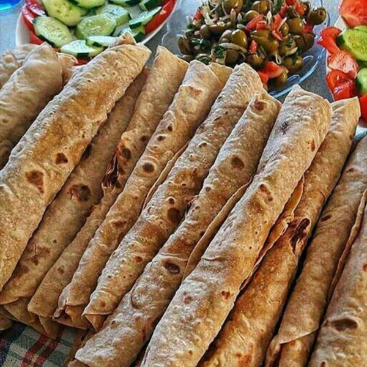
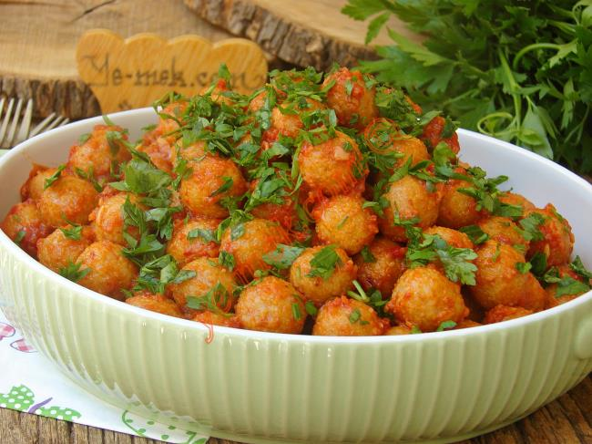
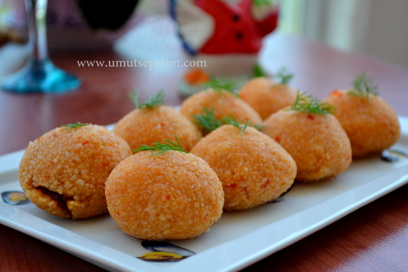
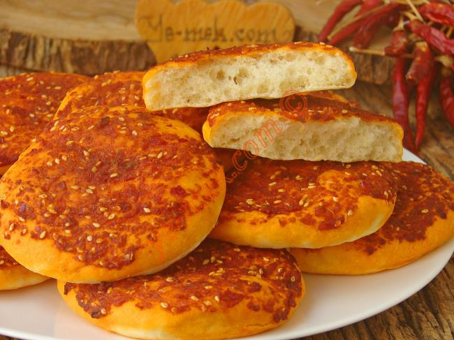
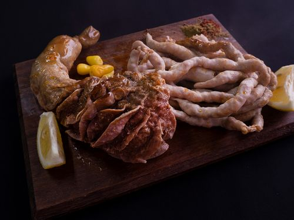
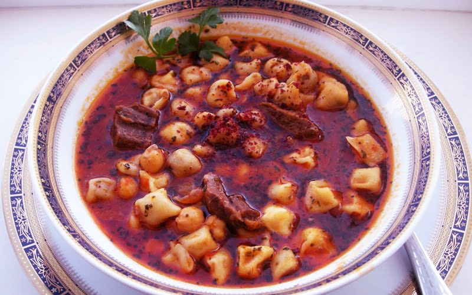
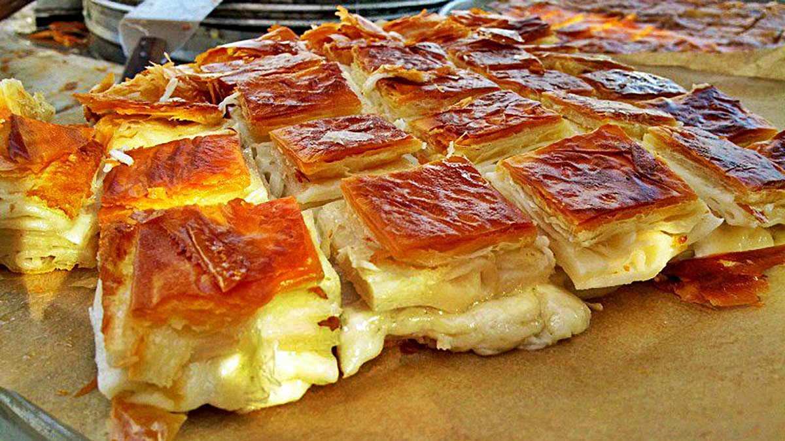
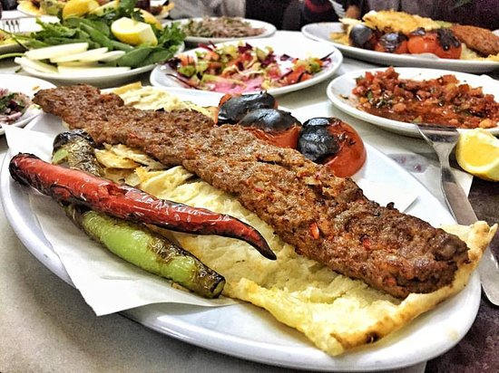

Meşhur Yemekleriyle bilinen Adana'nın yemekleri
Adana Adana yemekleri hem Akdeniz hem Doğu Anadolu mutfağının leziz yanlarını bir araya getiren tatlara sahip! Aynı zamanda kendi yöresine has kebabını tüm ülkeye hatta ülke sınırları dışına taşımış da bir yöredir Adana. Bulgur, kırmızı et ve sakatatların oldukça ön planda olduğu bu mutfakta fresh lezzetler de kendine yer bulur.
Sıkma
Adana ve Mersin'de en nefis hallerinin sunulduğu bir lezzettir peynirli sıkma! Hatta sadece peynirle sınırlandırmayalım patateslisi de çok güzel olur. Adana kahvaltısı denince insanın canını sıkma çektirir. Özellikle yanınsa bol köpüklü ayran içilmesi tavsiye edilir.
Sarımsaklı Köfte
Sarımsaklı köfteye Adana yöresinin kendine has usulü ile hazırlanan fellah köfte denebilir. Bol domates ve sarımsaklı sosu, ikram ederken üzerine serpiştirilen kıyılmış maydanozu ile bilinir.
İçli Köfte
İçli köfte Adana'da genelde haşlanarak servis edilir. Çok pratikçe yuvarlanarak hazırlanan şekli ile de kendine has bir görünümü vardır. Üzerine limon sıkınca ise insanın yedikçe yiyesi gelir.
Acılı Ekmek
Biberli ekmek veya nam-ı diğer acılı ekmek! Adana'da evlerde puf puf tepsideki haliyle yapılır. Pastanelerde poğaça şeklinde satıldığını görebilirsiniz.
Şırdan ve Mumbar
Adana'nın lezzetlerinden biri de şırdan dolması! Ben sakatat yemem diyenlerin bile merakını cezbeden değişik bir dolmadır. Adana'ya gittiyseniz en az bir kere yemeniz tavsiye edilir.
Yüksük Çorbası
Adana yemekleri arasında yer alan nefis mi nefis bir tarif: yüksük çorbası! Adının çorba olduğuna ise bakmayın, mantılı, nohutlu içeriği ile doyurucu bir yemek gibi oluyor.
Adana Böreği
Tepsiden bir dilim alayım derken uzadıkça uzayan peyniri, üzeri çıtır içi yumuşacık halleriyle Adana böreği! Adana'da çok meşhur bir markaya ait olan bu tadın bazı metropol şehirlerde yeni restoranlar açmasıyla iyice bilinir bir hal aldı.
Kebap

Son olarak en meşhur olan Adana kebabı, Adana'ya özgü, "zırh" adı verilen, satıra benzer bir bıçak ile elde kıyılan parça etten yapılan Türk mutfağında bir kebap veya şiş köfte çeşidi. Adana kebabını diğer kebaplardan ayıran en belirgin özellik kullanılan ettir.
Son olarak en meşhur olan Adana kebabı, Adana'ya özgü, "zırh" adı verilen, satıra benzer bir bıçak ile elde kıyılan parça etten yapılan Türk mutfağında bir kebap veya şiş köfte çeşidi. Adana kebabını diğer kebaplardan ayıran en belirgin özellik kullanılan ettir.